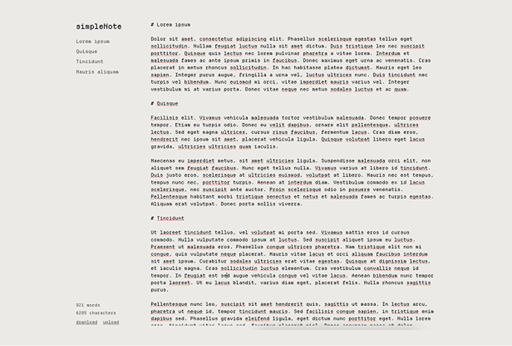
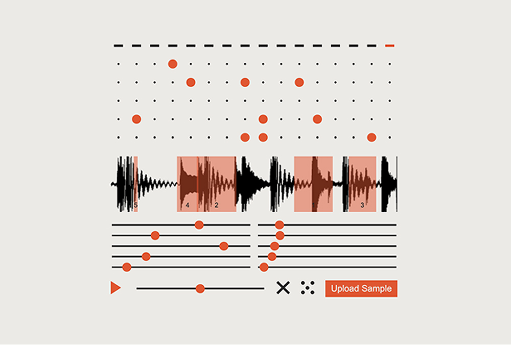
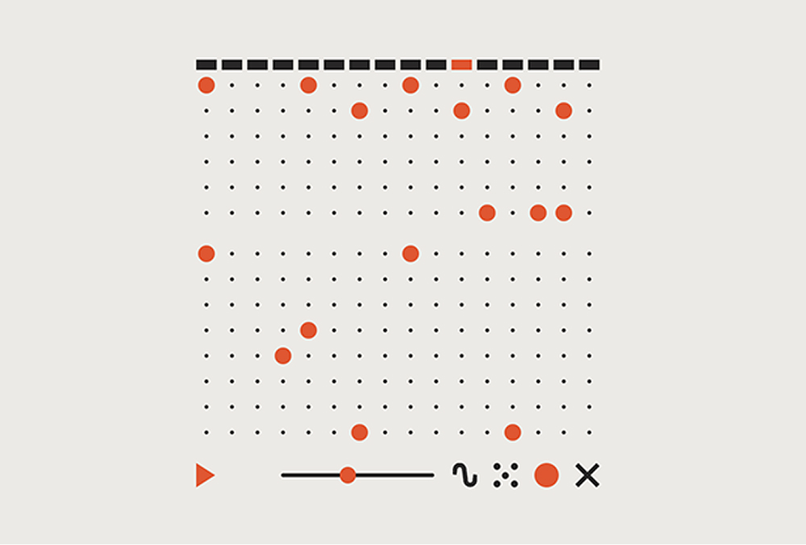

Simple Collection
My latest tech adventure just dropped! So, I had this wild idea to team up with AI and create a bunch of cool mini-apps. I mixed in my design skills, threw in my basic coding know-how, and let AI do its magic. And bam! Just like that, simpleCollection was born!



